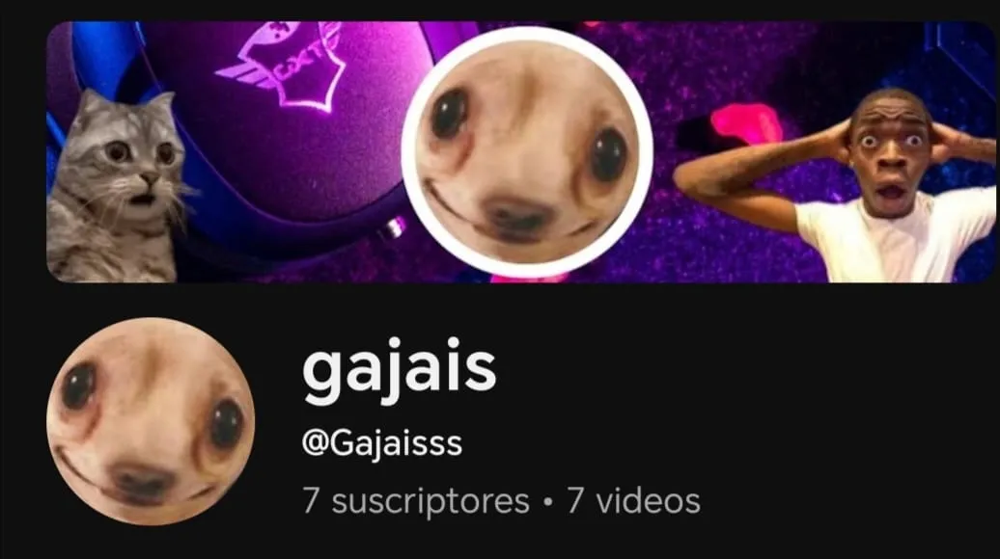

Hola, soy Gajais, soy un chico que apenas está empezando a crear webs, esta es mi segunda web, este creo que sería mi proyecto más serio. También me dedico a subir videos a Youtube, jugando juegos y cosas así, siempre quise serlo y por suerte ahora estoy cumpliendo ese sueño.
No tengo pensado decir mi nombre real pero no se si lo dijeron o se mostró en alguno de mis videos de YouTube, esperemos que no.

(Imagen de cuando empecé en YouTube)
Tampoco a pasado mucho tiempo para hablar mucho porque aún estoy en mis comienzos pero voy a decir lo que pasó en las primeras 3 semanas mas o menos.
A mi me regalaron un buen teléfono el día 6 de enero, con eso decidí que iba a empezar a grabar y editar, es con lo que lo sigo haciendo ahora. Mi primer video lo subí el 9 de enero, titulado "Solo puedo elegir una opción | Azúl🟦 o Rojo🟥 | Gajais" en el que estaba en una página web en la que te daba dos opciones y tenía q elegir una y luego te mostraba cuanta gente eligió esa opción. Hice la presentación despues de ese video porque se me olvidó o más bien se me ocurrió en otro momento.
Al conseguir mi primer suscriptor me emocioné tanto que empezé a saltar por toda la casa, aún lo recuerdo, tacosdepalomo, se suscribió del video presentando mi habitación
Como una o dos semanas después de empezar a hacer contenido me acordé de que tenía una Toshiba m400 Windows 7 con poca ram pero espacio aceptable, ram suficiente como para correr juegos 2D y algunos viejos 3D con gráficos bajos y empezé a hacer más contenido de gameplays.
Empecé a los 9 años con scratch, en 4°, el año en el que empezaba pensamiento computacional, en 3° me habían dado la computadora de la escuela que es la que estoy usando para escribir esto, empecé con scratch, estuve hasta 5° con eso. En ese año me di cuenta que existía python, estuve como dos meses usándolo, aprendí rápido gracias a la lógica de programación que me enseñó scratch, aperndí hasta las funciones, no entendía que eran las class y no tenía imaginación de que más crear, por lo que lo dejé por un año, aunque en ese momento lo dejé aún quería ser programador de grande.
Un año después, o sea, hace como un mes o menos quise volver, pero no con python, me cambié a Javascript, lo cuál aprendí todo lo que sabía hacer en python en javascript en el segundo día, es muy parecido a python, por lo que se me hizo más fácil aprender esas cosas que sabía de Python. Tengo que decir que Python si me ayudó mucho pero me gusta más javascript, además de que con Javascript si aprendí las class. Al tercer día aprendí que Javascript era especializado en desarrollo web, obviamente no sabía html y además pensaba que era muy complicado y que tenía que crecer para aprenderlo, hay un blog sobre eso en esta página, pero al final, no me acuerdo como me animé ni como empecé pero decidí aprenderlo.
Al principio me acuerdo de que solo quería ver como era y que me iba a rendir al ver como era, pero al final fue más fácil de lo que pensé. Luego otro problema es que sabía que se usaba Css para el diseño, y como Css se me hacía parecido a C++ pensaba que era difícil, aprendí a como hacer cajas para empezar, como elementos y ahora aprendí mejor, ¿viste que esta página tiene un degradé de fondo? eso lo aprendí hace poco. Y bueno, ahora acá estoy creando mis propias webs. :)